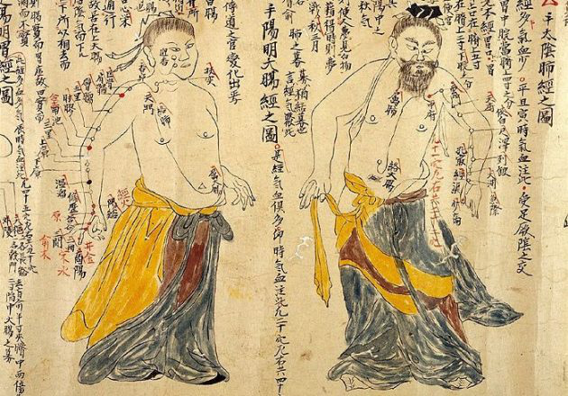
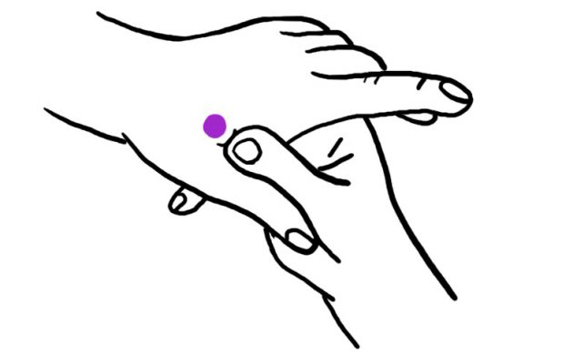
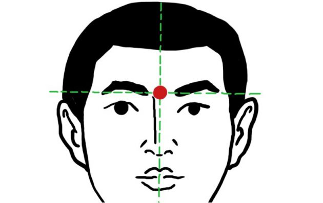
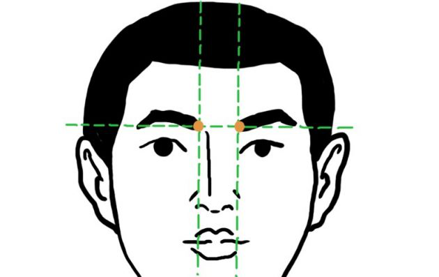
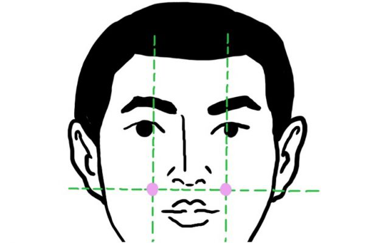
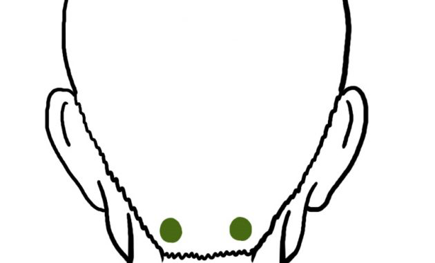
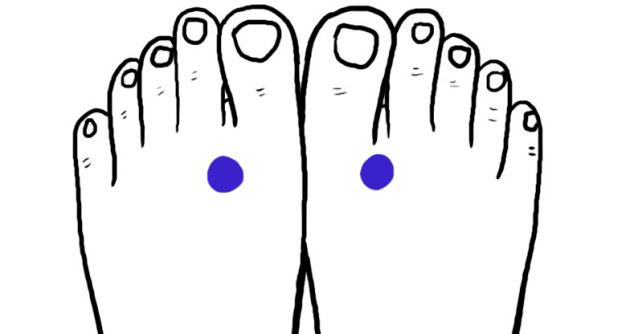

Как без таблеток избавиться от головной боли за 5 минут
Когда голова раскалывается, а под рукой нет таблеток, ситуация кажется безвыходной. Зря. Китайцы уже 5 тысяч лет избавляются от боли с помощью особого точечного массажа — акупрессуры.
Что такое акупрессура
Акупрессура — точечный массаж, пришедший из Древнего Китая. Суть в воздействии на особые «меридианы» — невидимые линии, которые проходят через тело человека. Точек на этих меридианах несколько сотен. Каждая отвечает за определённую функцию организма.
Массаж не требует специальных медицинских знаний. Он относительно безболезненный и несложный. И при этом действительно работает [1]Effect of acupressure and trigger points in treating headache: a randomized controlled trial [2]The effectiveness of acupressure on relieving pain: a systematic review [3]Acupuncture for pediatric pain .pinimg.com
Как массировать акупрессурные точки
Примите удобное положение: сядьте или лягте на спину, расслабьтесь. По возможности избавьтесь от внешних раздражителей, наденьте наушники, включите спокойную музыку, отключите телефон.
Найдите на теле активную точку: посмотрите, где она располагается на картинке, и начните прощупывать кожу. Искомое место откликнется на нажатие болевым сигналом.
Массируйте точку надавливаниями или круговыми движениями. Головная боль исчезнет или во время массажа, или через 10–15 минут после.
Китайцы воздействуют на активные точки тремя способами:
При необходимости массаж можно делать несколько раз в день. Стимуляция большинства акупрессурных точек доступна каждому и не имеет противопоказаний.
合谷 — точки хэ-гу

Располагаются на тыльной стороне обеих кистей между большим и указательным пальцами. Чтобы найти точку, соедините эти пальцы: в искомом месте образуется выпуклость.
В китайской медицине точки хэ-гу универсальны: их используют, когда болит голова или зубы, когда надо сосредоточиться или при лёгком недомогании. Единственное противопоказание — поздние сроки беременности: стимуляция может спровоцировать преждевременные схватки.
Хэ-гу массируют большим и указательным пальцами противоположной руки, защипывая ладонь.
印堂 — точка инь-тан

Акупрессурной точке третьего глаза всегда уделяли особое внимание, в древности по ней даже предсказывали судьбу. Нащупать эту точку просто: она находится на переносице.
Инь-тан стимулируют не только при головной боли, но и при усталости глаз, расстройствах пищеварения и язвенной болезни. Её массируют указательным, большим пальцем или костяшками.
攢竹 — точки цуань-чжу

Точки располагаются симметрично у основания бровей. Их можно стимулировать, если у вас болит голова (особенно в области затылка), бессонница, насморк или устали глаза.
Цуань-чжу массируют одновременно обеими руками.
巨髎 — точки цзюй-ляо

Чтобы найти цзюй-ляо, нащупайте углубление в нижней части скулы на линии зрачков. Если при надавливании вы почувствуете верхнюю десну, всё правильно.
Цзюй-ляо стимулируют одновременно указательными или большими пальцами обеих рук. Пара минут массажа снимет напряжение и усталость, жар (ощущения, как при начинающейся простуде) и облегчит зубную и головную боли.
天柱 — точки тянь-чжу

Голову часто ломит после длительного сидения за компьютером в позе вопросительного знака. Когда шейные позвонки находятся в неправильном положении, мышцам приходится напрягаться. Снять напряжение поможет стимуляция точек тянь-чжу в верхней части шеи, примерно в сантиметре от позвоночника.
В идеале эти точки нужно массировать лёжа на спине и поддерживая шею сзади обеими руками. Но и в офисе сделать это возможно. Откиньтесь на спинку кресла и как следует разомните шею. Затем надавливайте на тянь-чжу несколько минут, немного расслабьтесь с закрытыми глазами и приступайте к работе с новыми силами.
太沖 — точки тай-чун

Тай-чун можно найти во впадине между большим и указательным пальцами ног. Стимуляция точек снимет головную боль, ломоту в ступнях и даже похмелье.
Массировать тай-чун можно руками, но есть и более простой вариант. Скиньте туфли и пяткой одной ноги надавливайте на ступню второй. После поменяйте ноги и повторите процедуру.
Доверяете ли вы методам традиционной китайской медицины? Получилось ли с помощью акупрессуры избавиться от головной боли? Делитесь своим опытом в комментариях.